| 1: | A 3 x 3 system has the following steady-state gain matrix and RGA:
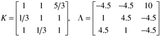
How would you pair the variables for an MVSISO strategy and why? |
| 2: | A two input–two output process has the following RGA:
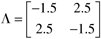
Assume that the MVSISO system is tuned for stable feedback control with both loops closed.
Case 1—
u1 is paired with y1 (loop 1) and u2 is paired with y2 (loop 2). What happens if loop 2 is opened? Why? Must loop 1 be retuned? How?
Case 2—
u1 is paired with y2 (loop 1) and u2 is paired with y1 (loop 2). What happens if loop 2 is opened? Why? Must loop 1 be retuned? How? |
| 3: | A system has the following process gain matrix:
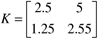
How would you pair variables for your control loops? Why? |
| 4: | A three input–three output process has the following RGA:
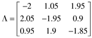
How would you pair variables for your control loops? Why? |
| 5: | Consider the following process gain matrix and RGA:
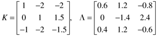
Can three SISO control loops be used? b1. If your answer to a is yes, what are the recommended pairings [will these pairings assure stability if one of the loops must be opened (think about the 2 x 2 subsystems)]? Reorder the inputs and outputs such that the paired variables are on the diagonal of the new G(0) matrix. Show the new G(0) matrix and the new L matrix. b2. If your answer to a is no, do you recommend a reduction to two loops? If so, what are your recommendations for input-output pairings for this system?
|
| 6: | Consider the following steady-state gain matrix for a process with three inputs and four outputs. [This is for a Benzene-Toluene distillation column, with a side draw—see Doukas and Luyben (1978) for details.] Assuming all the outputs are of equal importance, which input-output pairings would you use for a MVSISO control system?
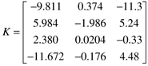
|
| 7: | For a 2 x 2 system, show that a y1-u2 and y2-u1 pairing yields the following result for l12.
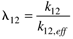
where 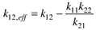 |
| 8: | Consider the steady-state process gain matrix
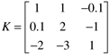
which yields the following RGA:
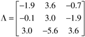
Is it possible to pair outputs and inputs to form three separate single-loop controllers? If it can be done, do it. If it cannot be done, explain why and suggest another multivariable control strategy. |
| 9: | Your boss has told you to develop a control strategy for the following stirred-tank heater, which has two inputs (rate of heat addition, Q, and flow rate to tank, Fi), and two outputs (tank height and temperature). She also gave you the following transfer function matrix, assuming that you knew which output corresponded to which measured variable and which input corresponded to which manipulated variable.
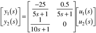
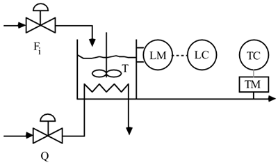
Use physical reasoning to determine which output corresponds to which measurement (i.e., is y1 the tank height or the tank temperature) and which input corresponds to which manipulated variable (i.e., is u1 the heat addition rate or the flow rate to the tank?). If two SISO loops are used to control this process, how should the variables be paired? Renumber the outputs such that the output-input pairings are on the diagonal of the transfer function matrix. Show the new transfer function matrix. |
| 10: | The objective of a wet grinding circuit is to grind large solid material to form granular material. Solids are fed with a water stream to a ball mill where the solids are ground. The slurry effluent from the ball mill is fed to a sump which is used as surge capacity. The slurry is pumped to a cyclone separator, which separates water from solid material and returns water to the ball mill. A schematic diagram is shown below. 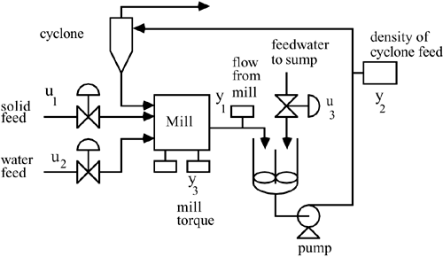
Consider the following process model (Hulbert and Woodburn, 1983)
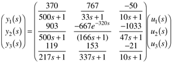
Which has the following RGA
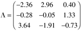
What pairing is suggested by the RGA for this system? Why? Connect the appropriate input and output variables with controllers, on the diagram above, to form a control instrumentation diagram. Discuss the failure sensitivity of this three input–three output system. That is, if any of the control loops failed, would the resulting two input–two output system have the correct pairing?
|
| 11: | A forced circulation evaporator is used to concentrate dilute liquors by evaporating solvent from a feed stream. Feed is mixed with recirculating liquor and pumped into the tube side of a vertical heat exchanger. Steam enters the shell side of the vertical heat exchanger and condenses on the outside of the tubes. The liquor is partially vaporized as it passes through the tube side of the heat exchanger and passes into the separator. Vapor from the separator is condensed by a cooling water exchanger, while a portion of the liquid stream from the separator is withdrawn as product and the rest is recirculated to the heat exchanger. A schematic process and instrumentation diagram is shown below. 
It seems fairly clear that it is desirable to control the level in the separator (y1) by manipulating the product flow rate (u1). It is particularly important to keep the level under feedback control, since is has integrating action (a pole is at the origin). With the level controlled by manipulating the product flow rate, the following steady-state input-output relationship is found for the other variables
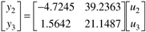
How should the other loops be paired? Why? |
| 12: | Consider the following system with two outputs and three inputs (Reeves and Arkun, 1989). This model is for a mixing tank with three input streams. The outputs are the concentration and tank height, while the three inputs are stream flow rates:
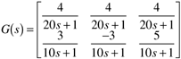
To use a MVSISO strategy, we must remove one of the inputs (set it to a constant value, rather than using it for feedback control). |
| 13: | As a promising young engineer, you are placed in charge of a gasoline blending facility. This facility blends three refinery streams together to form a final product stream that must meet road octane (RO) and Reid vapor pressure (RVP, psi) specifications. Two streams are available for manipulation. You are given the following data
|
10 Bbl/min | 20 Bbl/min | 90.000 | 10.000 | 60 Bbl/min | 11 | 20 | 90.164 | 10.164 | 61 | 10 | 21 | 90.164 | 9.918 | 61 |
Let Flow 1 be the first input and Flow 2 be the second input. RO is the first output and RVP is the second output.
Calculate the RGA. How would you pair the input-output variables for this process? (Why?) Complete the control instrumentation diagram shown below. 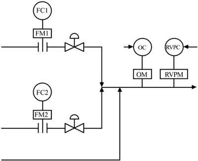 Draw a control block diagram for this process (with the proper pairings). (Are there any cascade loops?)
|
| 14: | Consider the whiskey blending problem. A new market for 70 proof whiskey (0.35 volume fraction ethanol) has developed. Assume that the feedstreams are still 80 proof whiskey and pure water, and that the desired production rate of 70 proof whiskey is 4 gpm. Find the new gain matrix and relative gain array. What are the implications for controller pairing? |